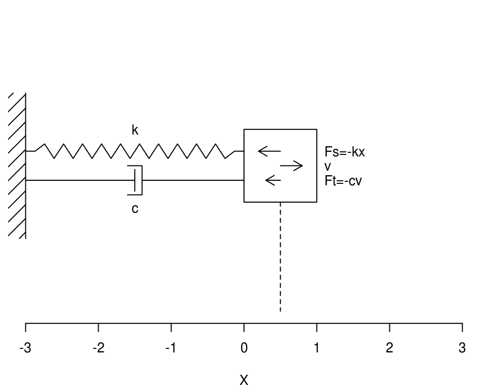
Charakterystyka nieliniowa sprężyny: \(k=k_1(1+k_2x^2)\)
Energia kinetyczna: \[E_k = \frac{m\dot x^2}{2}\] Energia potencjalna sprężyny: \[E_p = \int k_1(1+k_2x^2)x\cdot dx = \int \left(k_1x+k_1k_2x^3\right)dx = \frac{k_1x^2}{2}+\frac{k_1k_2x^4}{4}\] Całkowita energia mechaniczna: \[E = \frac{m\dot x^2}{2} + \frac{k_1x^2}{2}+\frac{k_1k_2x^4}{4}\]
Uwaga: bez straty ogólności, w dalszej części pracy będziemy przyjmować \(m=1\).
Układ równań został scałkowany przy pomocy metody Runge-Kutta 4-tego rzędu. Czas całkowania: \(10s\). Krok całkowania: \(\frac{10s}{1500}\).
Przeprowadzono symulację dla czterech przypadków: Liniowej i nieliniowej charakterystyki spreżyny, a także z i bez tłumienia.
Liniowa sprężyna charakteryzuje się liniową zależnością pomiędzy wychyleniem a siłą:
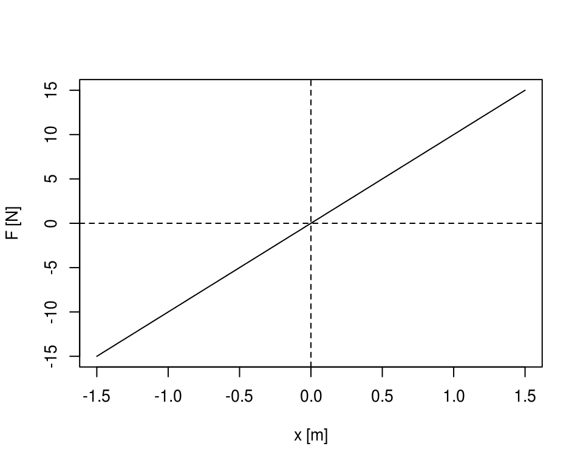 Rozwiązanie numeryczne tego układu jest zgodne z oczekiwanym sinusoidalnym kształtem:
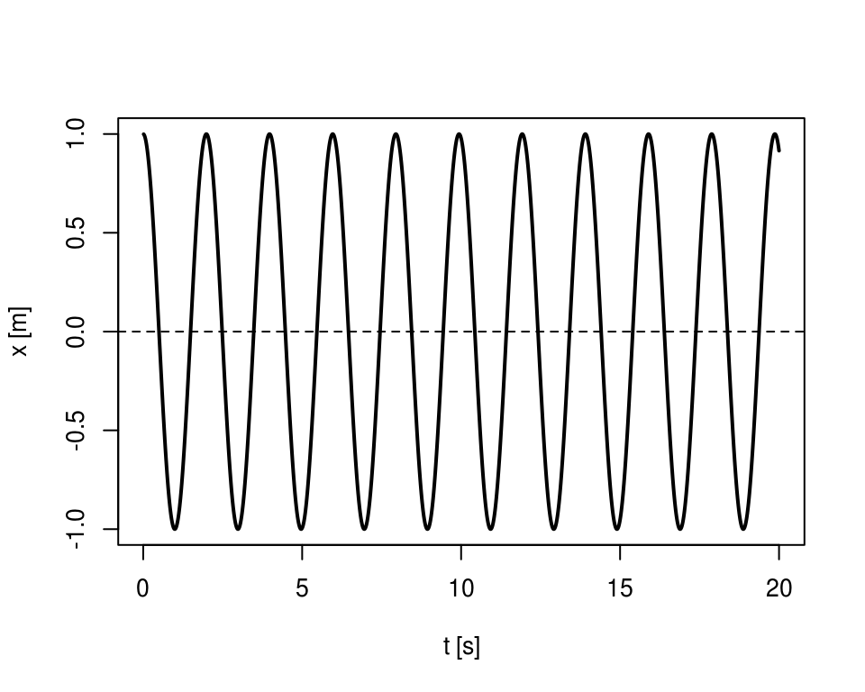
Dla tak prostego układu \(m\ddot x + k_1x = 0\), możemy wyznaczyć rozwiązanie analityczne przez podstawienie \(x=e^{rt}\). Otrzymane rozwiązanie ogólne (po usunięciu części urojonej) ma postać: \[x(t) = A \cos{\sqrt{\frac{k_1}{m}}t} + B \sin{\sqrt{\frac{k_1}{m}}t}\] Dla warunków początkowych \(x(0)=1\land \dot x(0)=1\) mamy: \[x(t) = \cos{\sqrt{\frac{k_1}{m}}t}\]
Wizualnie rozwiązanie numeryczne pokryłoby się z analitycznym, możemy jednak zwizualizować błąd względny (\(\left|\frac{x_n-x_a}{x_a}\right|\)) w skali logaryczmicznej:
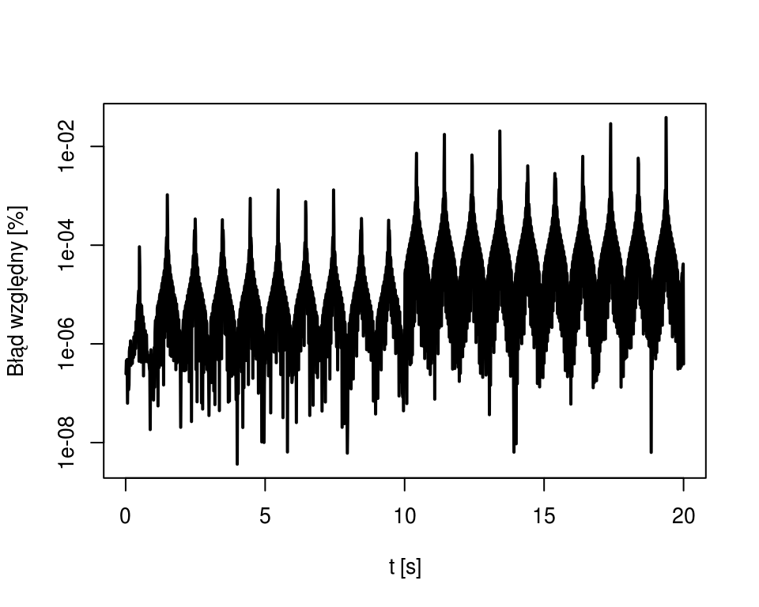
W przestrzeni fazowej (\(x-v\)) rozwiązanie jest zamkniętą elipsą. Nie ma tu sensu mówienie o jej proporcjach, poniewaz obie osie mają różne skale.
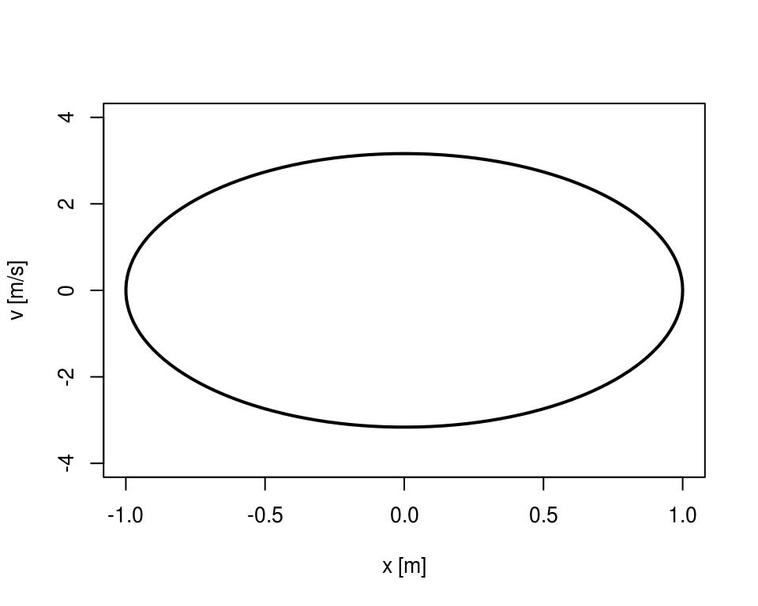
Zamknięta ścieżka w przestrzeni fazowej sugeruje, że układ nie traci energii.
Zależność siły od wychylenia dla omawianej nieliniowej sprężyny:
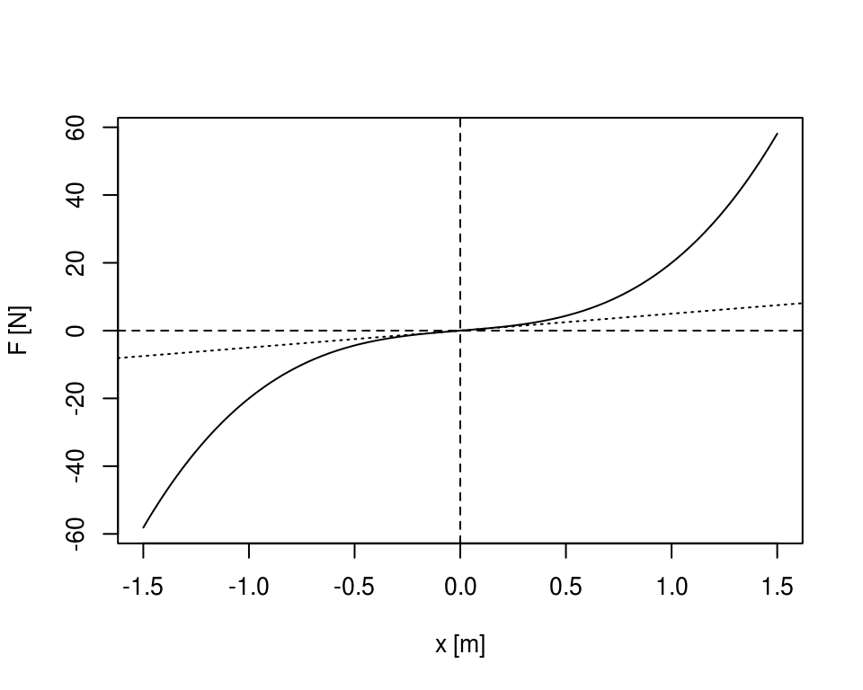
Rozwiązanie numeryczne dla nieliniowej sprężyny ma “ostrzej” zakończone maxima i minima. Jest to związane z wyższą siłą siłą przy dużych wychyleniach niż w przypadku liniowej sprężyny.
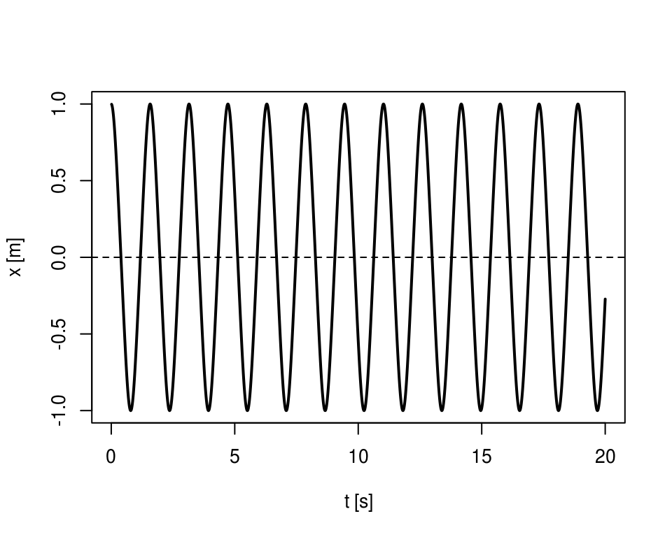
W przestrzeni fazowej, trajektoria nadal jest zamkniętą pętlą, lecz nie jest już elipsą:
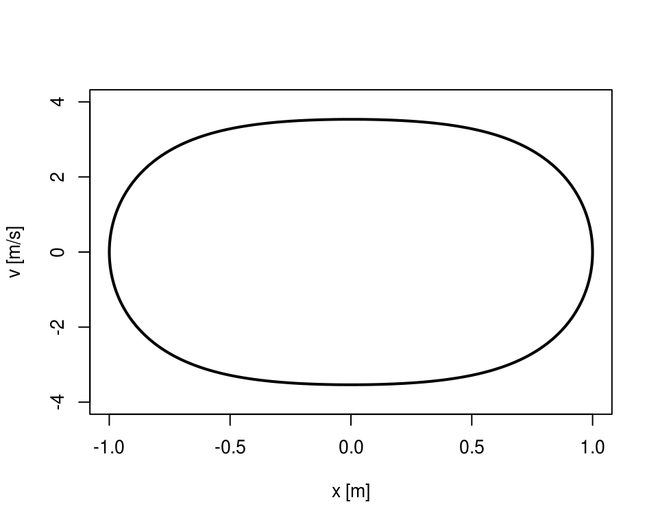
Rozwiązanie numeryczne dla liniowej sprężyny z tłumikiem, ma wykładniczy spadek. W związku z tym, że częstotliwość drgania układu liniowego nie zależy od wychylenia, odstępy pomiędzy momentami przejścia przez zero są ciągle stałe.
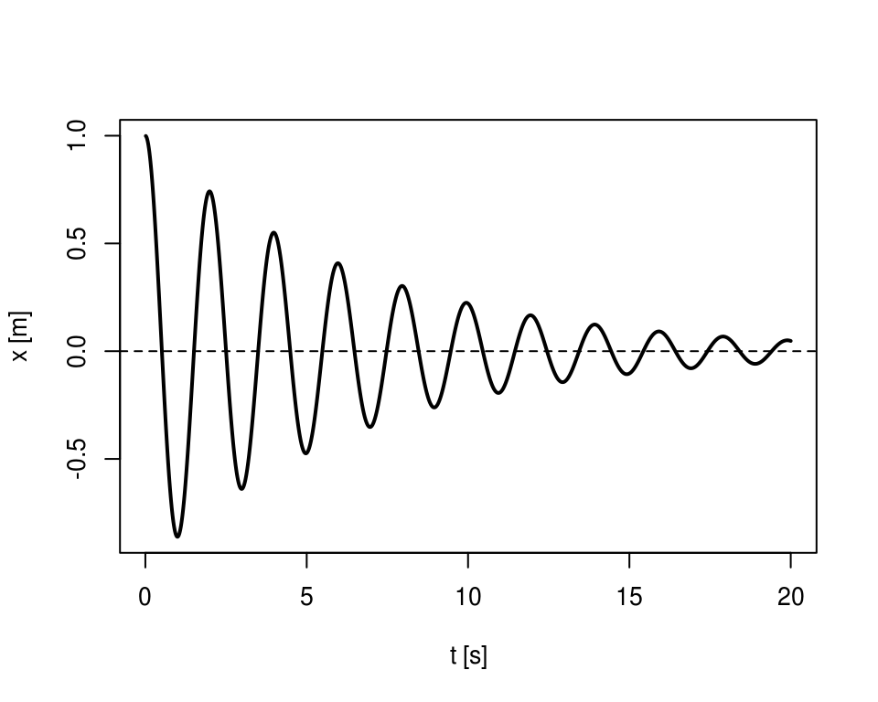
W przestrzeni fazowej, trajektoria nie jest już zamknięta i schodzi spiralnie do zera:
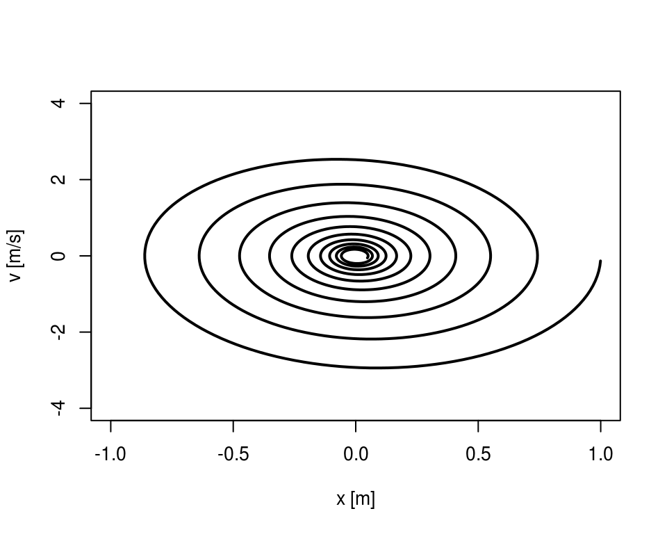
Tłumik wprowadza element niezachowawczy do układu. Powoduje to spadek energii. Łatwo ten efekt zobaczyć wymnażając oryginalny układ przez \(\dot x\): \[\dot xm\ddot x + \dot xc\dot x + \dot xk_1x=0\] Po przekształceniu mamy: \[\frac{d}{dt}\left(\frac{m\dot x^2}{2}+\frac{k_1 x^2}{2}\right)=-c\dot x^2\] Na wykresie całkowitej energii widać wyraźnie spadek energii, który następuje w momentach wysokiej prędkości.
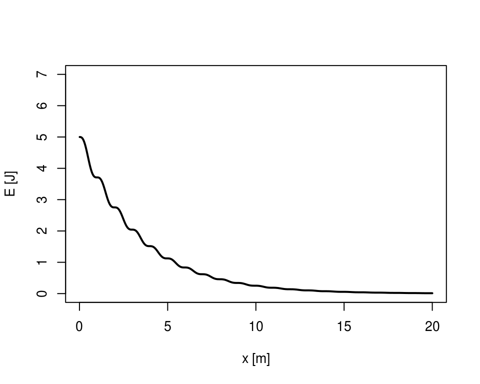
Rozwiązanie numeryczne dla nie-liniowej sprężyny z tłumikiem, ma także wykładniczy spadek. Dla nieliniowej prężyny cześtotliwość zmienia się wraz z maksymalnym wychyleniem. Dlatego odstępy pomiędzy przejściami przez zero będą się wydłużać.
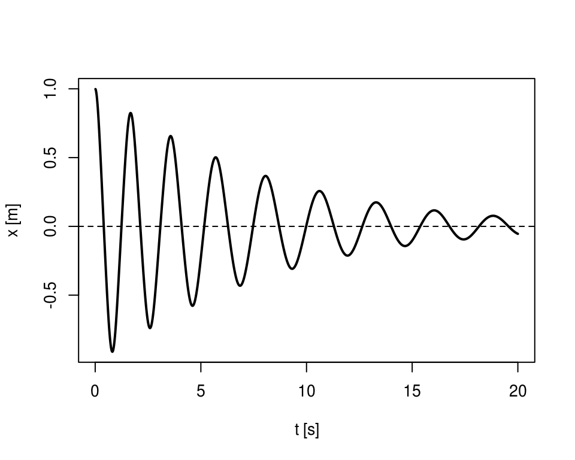
W przestrzeni fazowej, trajektoria jest nieeliptyczną spiralą. Dodatkowo można zauważyć że gdy wychylenie się zmniejsza, trajektora robi się coraz bardziej eliptyczna:
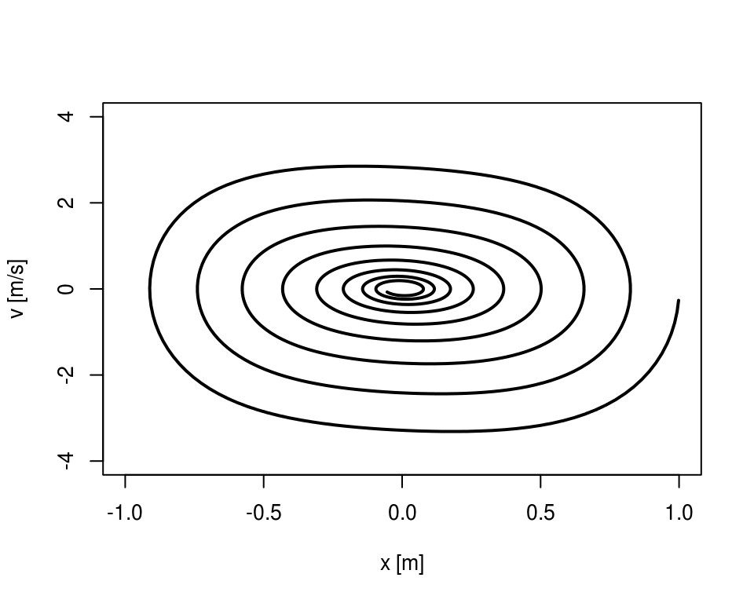
Tak jak w poprzednim przypadku, energia spada w czasie:
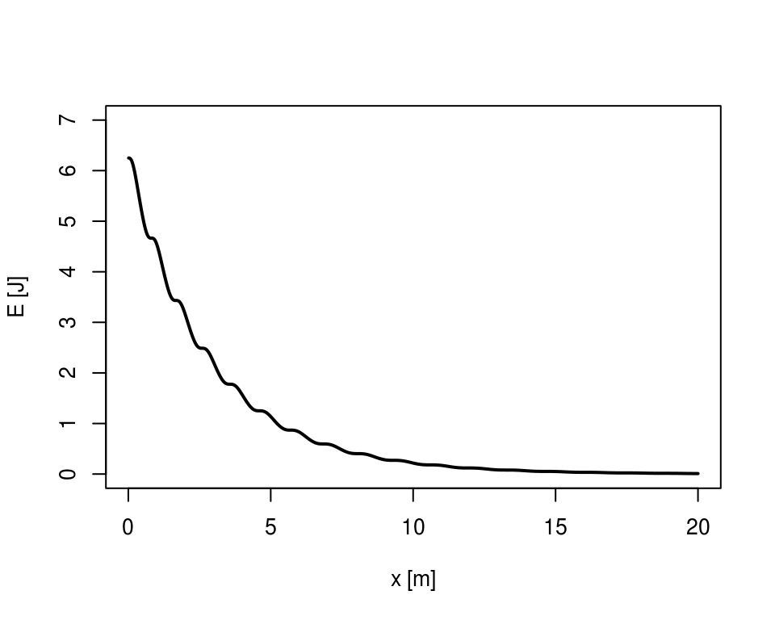